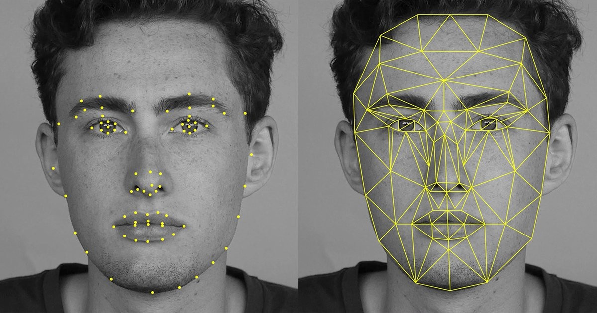
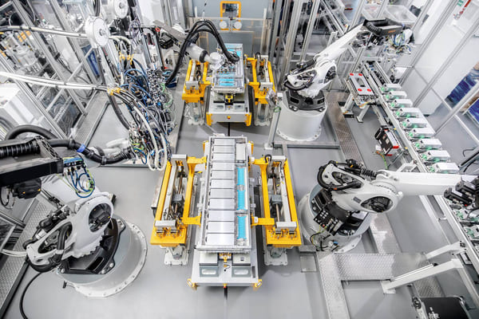
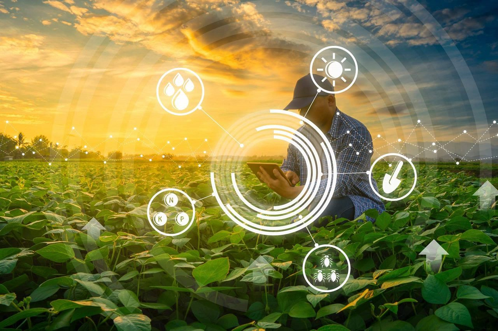

| Áreas de Aplicación |
Descripción |
Imágenes |
| Reconocimiento facial |
Utilizado en sistemas de seguridad, aplicaciones de identificación biométrica, control de accesos y autenticación de usuarios en dispositivos móviles. |
 |
| Automatización industrial |
Empleo para inspección de calidad de productos, guiado de robots, control de procesos de fabricación y seguimiento de piezas en líneas de producción. |
 |
| Navegación autónoma |
En vehículos autónomos, drones y robots móviles para la detección y evitación de obstáculos, así como para la identificación de rutas seguras. |
 |
| Medicina y salud |
Utilizado en el diagnóstico médico a través del análisis de imágenes médicas como radiografías, resonancias magnéticas y tomografías computarizadas, así como en la monitorización de pacientes y el seguimiento de movimientos oculares. |
|
| Agricultura inteligente |
Empleo en el monitoreo de cultivos, detección de enfermedades en plantas, clasificación y selección de frutas y verduras, y gestión eficiente del riego y la fertilización. |
 |
| Seguridad y vigilancia |
Utilizado para la detección de intrusos, análisis de comportamiento, reconocimiento de placas de matrícula y seguimiento de personas en espacios públicos. |
 |
| Realidad aumentada y virtual |
Empleo en aplicaciones de realidad aumentada y virtual para el seguimiento de marcadores, detección de superficies y objetos en el entorno del usuario, y superposición de contenido digital en el mundo real. |
 |
| Automatización de servicios |
Utilizado en la automatización de procesos en servicios como el reconocimiento y clasificación de documentos, identificación de objetos en entornos logísticos y detección de fraudes. |
 |